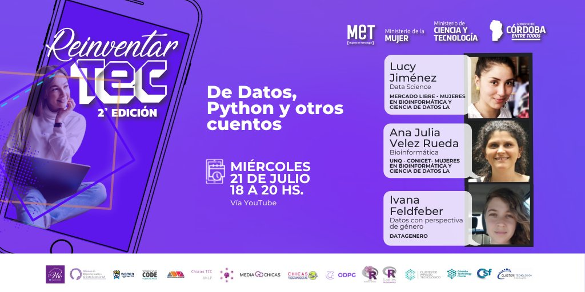
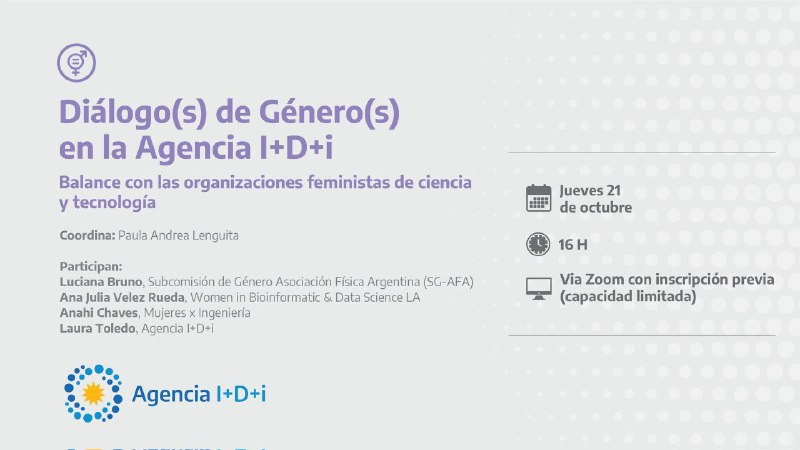

Articles
Highlights of the 1st Latin American Conference of Women in Bioinformatics and Data Science
The Biophysicist (2021) 2 (3): 99–102. https://doi.org/10.35459/tbp.2020.000174
The Latin American Congress of Women in Bioinformatics and Data Science aims at making visible the research carried out by women in the fields of Bioinformatics and Data Science. Even in this event generated by women to make the work of women researchers visible, which could be considered a small portion of the whole scientific system, we were able to observe the glass ceiling effects analyzing the data coming from the presented works. Our results show that these spaces are still needed and a great number of women working in the field are still waiting to be properly recognized.
Press and Interviews
Día Internacional de la mujer y la niña en la ciencia - This event was organized by Tecnológico de Monterrey, Mexico. Liliane Conteville and Mercedes Didier participated giving a talk about their careers, the challenges of women in science and about the projects of our community.
ReinventarTEC - De Datos, Python y otros cuentos - This event, totally free and with prior registration, will bring together representatives of women and gender organizations in technology, through weekly meetings, to discuss different topics and then share knowledge and skills in a practical way, women and diversities who have concerns.
Diálogo(s) de género(s) by Agencia I+D+i - This space was organized to debate about feminist science and technology organizations. At this event, were present Luciana Bruno from the Gender Subcommittee of the Argentine Physical Association, Ana Julia Velez Rueda and Mercedes Didier Garnham from Women in Bioinformatics & Data Science LA, Anahí Chaves from Mujeres x Ingeniería and Laura Toledo, director of the Argentine Sector Fund (FONARSEC) of the R + D + i Agency.
#CiEsParaTodos #8M2021! - "Ci Es Para todos" is a podcast on the Digital World and how it affects us day by day bringing important and relevant issues in health and education that impact our communities. Podcast with Denisse Rodríguez Colón (Directora Colmena 66), Angiemille Latorre(Chief Button Pusher y Co-Fundadora Seriously Creative), Ana Julia Velez Rueda (Women in Bioinformatics and Data Science Network Latin America) and Maria Isela Borroel Mora (VP Wizeline)
#CiEsParaTodos - "Ci Es Para todos" is a podcast on the Digital World and how it affects us day by day bringing important and relevant issues in health and education that impact our communities. Podcast with Lucy Jiménez about Women in Bioinformatics and Data Science
Cumbre de Comunidades - An event organized by Technolatinas for all communities interested in technology, with Maria Bravo (Geolatinas), Lucy Jiménez (WBDS LA) and Yesi Díaz (Códiga IA).
Marie Slodowska-Curie Alumni Association - The Argentinean Chapter of the Marie Slodowska-Curie Alumni Association. In this meeting we talk about how to Improve visibility of women in STEM: strategies and success stories. Ana Julia Velez Rueda talk about the WBDS LA project.

Technolatinas #BrunchTech - An event organized by Technolatinas. In this episode we talked about Bioinformatics and how people can get prepared to be able to work in this area.